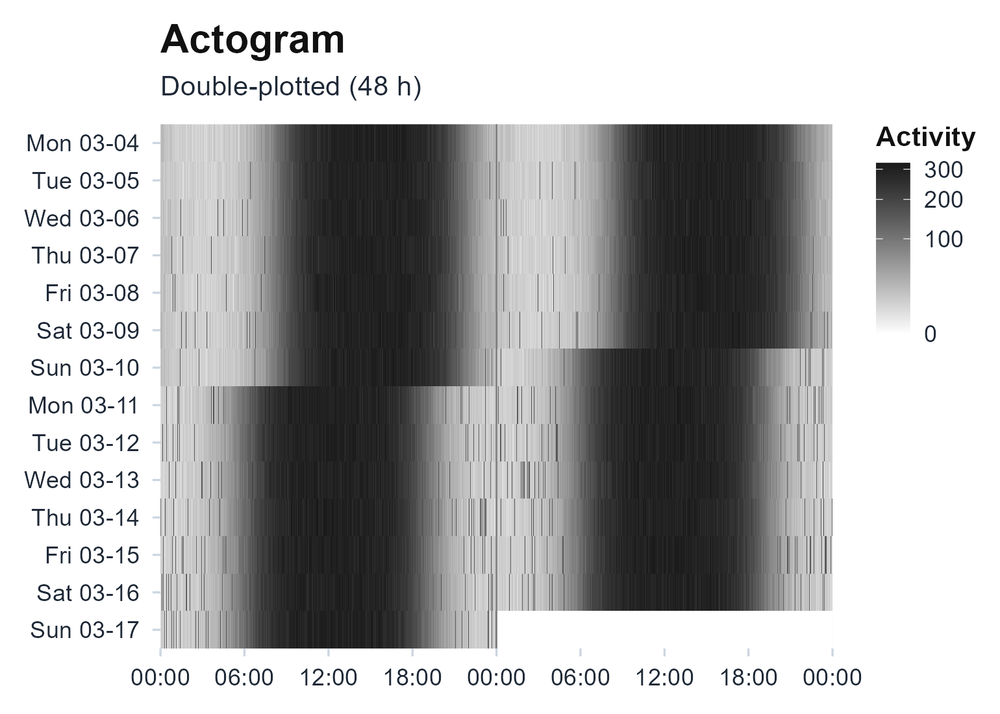
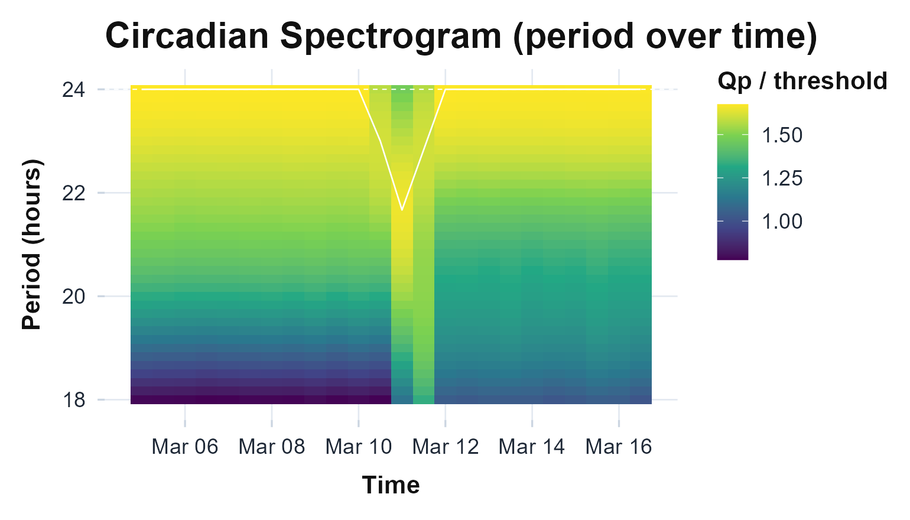
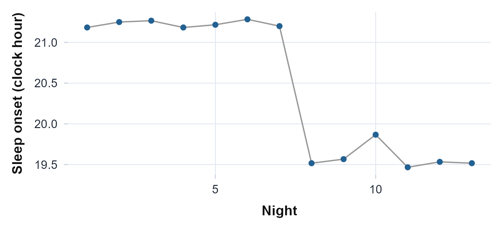
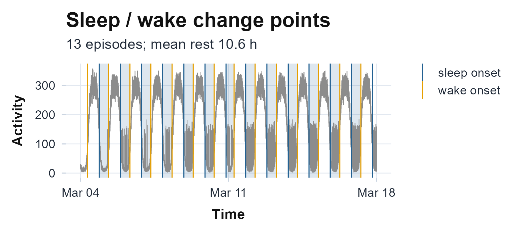
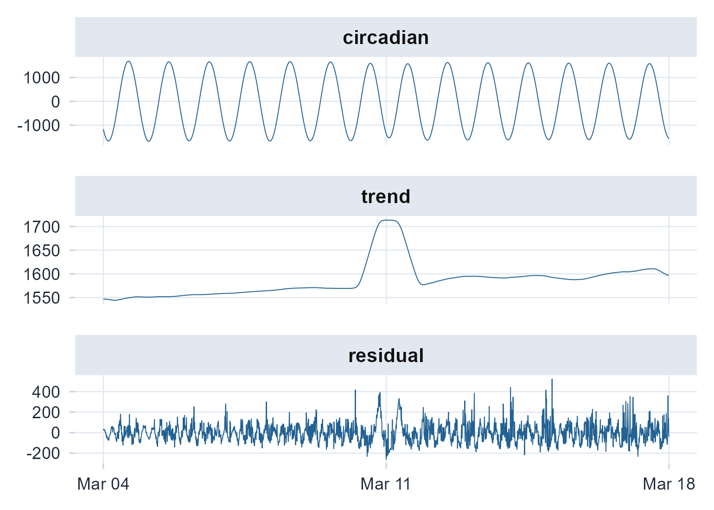
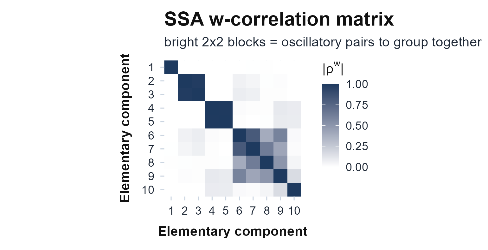
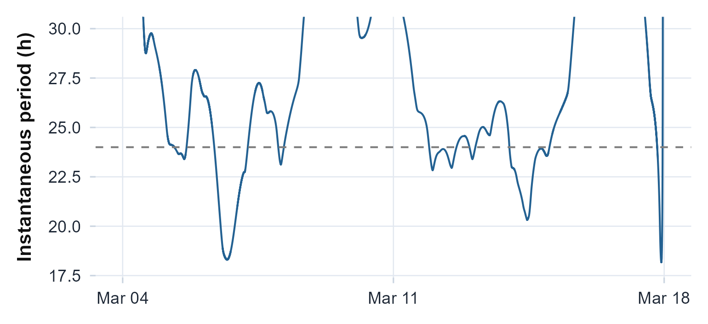
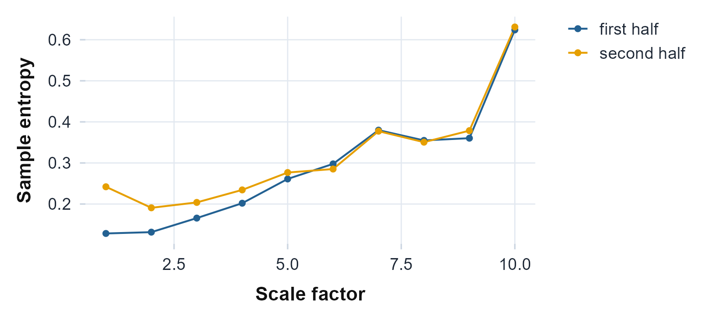
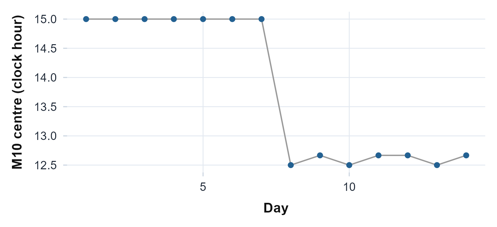

Nonstationary and complex rhythms
Source:vignettes/articles/nonstationary-rhythms.Rmd
nonstationary-rhythms.RmdThe getting-started vignette runs every method on one steady recording, where a single cosine and one set of nonparametric numbers describe the rhythm well. Real recordings are rarely that tidy. A rhythm can drift in period, advance or delay its phase partway through, or fragment as the rest period breaks up. When any of that happens, a summary that collapses the whole recording to one number averages the change away. This vignette builds a recording that is not stationary and works through the methods made to see what a static summary misses.
A recording that shifts
There is no nonstationary file to bundle, so we synthesise one: fourteen days at one-minute epochs, with an active block by day and quiet nights, whose peak advances about two and a half hours earlier across day 7, and whose nights fragment more as the recording goes on. A few methods that locate per-day landmarks read the minute series directly; the heavier decompositions read a ten-minute binned copy, the same split the getting-started vignette uses.
set.seed(42)
days <- 14
t <- as.POSIXct("2024-03-04", tz = "UTC") + (seq_len(days * 1440) - 1) * 60
hour <- as.numeric(format(t, "%H")) + as.numeric(format(t, "%M")) / 60
day <- (seq_along(t) - 1) %/% 1440 + 1
acro <- 15 - 2.5 * pmin(pmax(day - 7, 0), 1) # peak advances over day 7
block <- plogis(4 * cos(2 * pi * (hour - acro) / 24)) # active by day, quiet at night
frag <- (day - 1) / (days - 1) # 0 to 1 across the recording
counts <- rpois(length(t), 5 + 300 * block)
night_break <- runif(length(t)) < 0.10 * frag & block < 0.2
counts[night_break] <- rpois(sum(night_break), 150) # nights fragment late on
agg <- tapply(counts, as.integer(as.numeric(t) %/% 600), sum) # 10-minute bins
counts10 <- as.numeric(agg)
t10 <- as.POSIXct(as.numeric(names(agg)) * 600, origin = "1970-01-01", tz = "UTC")The double-plotted actogram tells the story at a glance. The active band sits at the same clock time for the first week, then steps to the left around day 7 as the peak moves earlier, and the later rows scatter as the nights fragment.
plot_actogram(counts, t, scale = "sqrt")
Double-plotted actogram of the synthetic recording. The activity band advances about two and a half hours earlier around day 7, and the later days fragment. A single cosine fit to all fourteen days cannot represent either change.
What a static summary misses
The usual descriptors still run, and they still return one answer for the whole recording. The cosinor averages all fourteen days onto a single 24-hour profile and fits one cosine to it, so the two phase regimes blur into one smeared peak. The nonparametric metrics give one interdaily-stability and one intradaily-variability number: fragmentation pushes them toward a less stable, more variable rhythm, but that single value is a compromise between the clean early days and the broken late ones, and neither number says that the phase moved.
cosinor.analysis(counts, t, period = 24)
#> Cosinor Analysis Results
#>
#> Period: 24 hours
#> N obs: 20160 (14.0 days)
#>
#> Parameters:
#> MESOR: 157.59 (rhythm-adjusted mean)
#> Amplitude: 154.72 (half peak-to-trough)
#> Acrophase: 13:47 (13.78 h, time of peak)
#>
#> Model Fit:
#> R-squared: 0.9901
#> F-statistic: 1053.60
#> P-value: 0e+00
rhythm <- circadian.rhythm(counts, t)
c(IS = rhythm$IS, IV = rhythm$IV, RA = rhythm$RA)
#> IS IV RA
#> 0.8778 0.0858 0.8533Seeing the drift over time
circadian.spectrogram() slides a window across the
recording and computes a chi-square periodogram (Sokolove & Bushell,
1978) in each, so the dominant period and its strength become
a surface over time rather than a single estimate. The circadian band
stays near 24 hours here, but its power tracks the regime change instead
of averaging through it.
circadian.spectrogram(counts10, t10, window_hours = 48, step_hours = 12,
epoch_length = 600)$plot
Sliding-window periodogram. Each column is one 48-hour window stepped every 12 hours; colour is periodogram power. The circadian band is visible throughout, and its strength shifts as the recording moves from the stable first week into the fragmented second.
Locating the shift
When the question is when the pattern changed rather than
how, sleep.changepoints() finds the per-night rest onsets
and wake times directly from the activity, anchored to a cosinor
threshold (Chen &
Sun, 2024). Because the active peak advances, the detected
sleep onsets move earlier in the second half of the recording.
cp <- sleep.changepoints(counts, t)
ep <- cp$sleep_episodes
ep$onset_hour <- as.numeric(format(ep$sleep_onset, "%H")) +
as.numeric(format(ep$sleep_onset, "%M")) / 60
ggplot(ep, aes(seq_along(onset_hour), onset_hour)) +
geom_line(colour = "grey60") + geom_point(colour = "#236192", size = 2) +
labs(x = "Night", y = "Sleep onset (clock hour)") +
theme_actiRhythm()
Detected sleep onset for each night, as a clock hour. The onset holds steady through the first week and then jumps earlier once the active phase advances, which the spectrogram and the actogram show from different angles.
plot_changepoints(counts, t)
The same detection as a track: the activity series with each sleep onset (navy) and wake onset (orange) marked and the rest episodes shaded. The rest band slides earlier across the recording.
Decomposing the signal
Singular spectrum analysis separates the series into additive pieces
without assuming a shape: a slow trend, the circadian oscillation, and a
residual (Golyandina & Zhigljavsky, 2013; Vautard et al., 1992).
circadian.ssa() returns each piece on the original time
axis, so the circadian component can be read on its own while the trend
and residual carry the parts the cosinor would have forced into one
curve.
ssa <- circadian.ssa(counts10, t10)
parts <- rbind(
data.frame(t = t10, value = ssa$circadian, part = "circadian"),
data.frame(t = t10, value = ssa$trend, part = "trend"),
data.frame(t = t10, value = ssa$residual, part = "residual"))
parts$part <- factor(parts$part, c("circadian", "trend", "residual"))
ggplot(parts, aes(t, value)) +
geom_line(colour = "#236192", linewidth = 0.3) +
facet_wrap(~part, ncol = 1, scales = "free_y") +
labs(x = NULL, y = NULL) +
theme_actiRhythm()
The singular-spectrum decomposition. The circadian component holds the 24-hour rhythm and bends with the phase advance, the trend follows the slow drift in overall activity, and the residual collects the rising fragmentation.
plot_ssa_wcor(counts10, t10)
The SSA w-correlation matrix that justifies the grouping above: bright off-diagonal 2x2 blocks are oscillatory pairs (the circadian rhythm), a single bright cell is the trend, and the diffuse tail is noise.
Empirical mode decomposition reaches the same idea from the other
direction (Huang et al.,
1998). It pulls out data-adaptive oscillatory modes, and
hilbert.huang() turns the circadian mode into an
instantaneous period, one value per epoch, so a period that wanders
shows up as a moving line rather than a single number.
emd <- circadian.emd(counts, t)
hht <- hilbert.huang(emd)
ggplot(data.frame(t = emd$times, period = hht$period), aes(t, period)) +
geom_line(colour = "#236192") +
geom_hline(yintercept = 24, linetype = 2, colour = "grey50") +
coord_cartesian(ylim = c(18, 30)) +
labs(x = NULL, y = "Instantaneous period (h)") +
theme_actiRhythm()
#> Warning: Removed 108 rows containing missing values or values outside the scale range
#> (`geom_line()`).
Instantaneous period of the circadian mode from the Hilbert-Huang transform. It stays near 24 hours but is not flat: the phase advance leaves its mark on the cycle-by-cycle estimate.
Quantifying the complexity
Fragmentation is a change in structure, not just in level, so it shows up in the multiscale measures. Splitting the recording into its clean first half and its broken second half, the late half carries more sample entropy (Costa et al., 2002) and a narrower multifractal spectrum (Kantelhardt et al., 2002), both signs that its dynamics have simplified toward noise: less predictable from epoch to epoch, and less richly self-similar across scales.
half <- length(counts10) %/% 2
early <- counts10[1:half]; late <- counts10[(half + 1):length(counts10)]
mse_e <- multiscale.entropy(early, scales = 1:10)
mse_l <- multiscale.entropy(late, scales = 1:10)
c(early_complexity = mse_e$area, late_complexity = mse_l$area)
#> early_complexity late_complexity
#> 2.905382 3.170657
c(early_mf_width = mfdfa(early)$width, late_mf_width = mfdfa(late)$width)
#> early_mf_width late_mf_width
#> 1.654179 1.084617
mse <- rbind(data.frame(scale = mse_e$scales, sampen = mse_e$mse, half = "first half"),
data.frame(scale = mse_l$scales, sampen = mse_l$mse, half = "second half"))
ggplot(mse, aes(scale, sampen, colour = half)) +
geom_line() + geom_point(size = 1.5) +
scale_colour_manual(values = c("first half" = "#236192", "second half" = "#E69F00")) +
labs(x = "Scale factor", y = "Sample entropy", colour = NULL) +
theme_actiRhythm()
Sample entropy against coarse-graining scale for the two halves. The fragmented second half carries more entropy, a less predictable and more broken rhythm.
A phase that survives the drift
When the phase moves, the averaged acrophase is a poor summary of any
single day. curve.registration() instead finds each day’s
own activity landmark, aligns the days on it, and reports a phase marker
plus how much that landmark varies (Ramsay & Silverman, 2005). The
variability is large here precisely because the phase advanced, which is
the honest answer.
reg <- curve.registration(counts, t)
c(mean_M10_hour = reg$mean_M10, phase_variability_h = reg$phase_sd)
#> mean_M10_hour phase_variability_h
#> 13.797765 1.213938
ggplot(reg$landmarks, aes(seq_along(M10_center_h), M10_center_h)) +
geom_line(colour = "grey60") + geom_point(colour = "#236192", size = 2) +
labs(x = "Day", y = "M10 centre (clock hour)") +
theme_actiRhythm()
The most-active-window centre for each day. It is steady through the first week and then jumps earlier, so the across-day phase variability that registration reports is real structure, not noise.
When to reach for each
Start with the actogram and the static summary. If the band is
straight and the nonparametric numbers sit comfortably, a cosinor and
the interdaily and intradaily metrics are enough. When the band bends,
fragments, or wanders, the static numbers become a compromise and the
dynamic tools earn their place. Reach for the spectrogram to watch the
period and its strength over time, sleep.changepoints() to
date a regime change, singular spectrum analysis or empirical mode
decomposition to read the circadian component apart from the trend and
the noise, multiscale entropy and the multifractal spectrum to measure
how the structure itself changes, and curve registration for a phase
that does not blur when the days disagree. Each one answers a question
that a single number cannot.